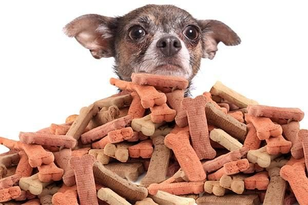
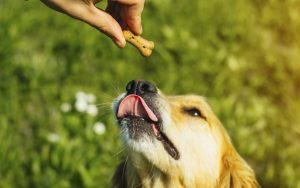

سگها عاشق جایزه هستن و همیشه دادن انواع تشویقی به سگ باعث خوشحال شدنش میشه. البته تشویقی کاربردهای زیادی داره و در زمینه آموزش و تربیت کردن، تمیز کردن دندانها و سلامت دهان و لثهها، تامین ویتامینهای لازم و … هم نقش مهمی داره.
بنابراین به عنوان صاحب سگ، خرید جایزه و خوراکی تشویقی برای سگ بازیگوشتون یکی از مهمترین کارهاییه که میتونید براش انجام بدید تا پیوند عاطفی بین شما و سگتون هم محکمتر و بهتر بشه. اما اصلاً غذای تشویقی سگ چیست و چه انواعی از تشویقی در بازار وجود داره؟ از بین این همه جایزه کدوم برای سگمون مناسبتره و کاربرد بیشتری براش داره؟
خیالت راحت، ما این راهو بلدیم و توی این مطلب پت پرس در ادامه در مورد انواع جایزه برای سگ، کاربرد اونا و همینطور نحوه خرید آنلاین تشویقی از سایت دیجی کالا با شما صحبت میکنیم. با ما در پت پرس همراه باشید.

غذای تشویقی سگ تریکسی مدل training bones
تشویقی استاراسنک دانههای کوچک به شکل استخوانه که طعمهای مختلفی داره. این تشویقیها جنس نرمی دارن و سگ زمان زیادی رو لازم نیست برای جویدن و خوردنش صرف کنه. به همین دلیل برای آموزش و تربیت و به عنوان تشویقی مخصوص توله سگ میتونید ازش استفاده کنید.
مزایا
- جنس نرم و خوش خوراک بودن
- جایزه برای سگ ارزان و مقرون به صرفه
- مناسب برای آموزش دادن سگ
- دانههای ریز و تعداد زیاد تشویقی در یک بسته
- حاوی فلوراید برای خوشبو کردن دهان سگ و از بین بردن پلاک دندانی
معایب
- به دلیل ریز بودن برای سگهای بزرگ مناسب نیست
- بعضی از سگها از بوی تشویقی ممکنه خوششون نیاد
تشویقی سگ نوتری پت مدل Rumen
نوتری پت یکی از شرکتهای ایرانیه که در زمینه محصولات مرتبط با پت کارنامه قابل قبولی داره. تشویقی سگ نوتری پت از اجزاء بدن حیوانات (سیرابی) تهیه شده که با شیوههای مدرن فرآوری و خشک شده و رطوبتشون به زیر ۶% رسیده تا ماندگاری بالایی داشته باشن.
این تشویقی قبل از خشک شدن در محلول حاوی ویتامینها، املاح و مواد معدنی قرار داده شده تا علاوه بر پروتئین، ویتامینها و مواد معدنی مورد نیاز سگ رو هم تامین کنه.
مزایا
- خوش خوراک و خوش طعم
- دارای پروتئین بسیار بالا
- دارای ویتامین ها و املاح و مواد معدنی مورد نیاز سگ
- جایزه سگ ارزان و اقتصادی
معایب
- به دلیل پروتئین بالا، نباید زیاد به حیوانات مسن داده بشه.
- در اثر زیاده روی ممکنه باعث اضافه وزن و چاقی در سگ بشه
تشویقی سگ چیست و چه کاربردی داره؟
تشویقی یا تریت (Treat) وعدههای کوچک غذاییه که به صورت میان وعده و اسنک به سگ داده میشه و کاربردهای زیادی میتونه داشته باشه. برخی از مهمترین کاربردهای جایزه برای سگ عبارتند از:
- خوشحال کردن و دوست شدن با سگ
- تشویق سگ پس از انجام یک کار خوب
- تربیت و آموزش دادن به سگ
- تامین ویتامینهای مورد نیاز
- کمک به سلامت دندانها
- کمک به حفظ سلامت پوست و مو
به طور کلی تشویقی سن و سال خاصی نداره؛ البته تشویقیهای جویدنی بیشتر به عنوان تشویقی توله سگ در سنین دندان درآوردن استفاده میشه و تشویقیهایی که حاوی ویتامینهای خاصی هستن برای بعضی سگ ها کاربرد بیشتری داره. اگه کنجکاو هستید که بدونین تریت و غذای مخصوص توله سگ باید چطور باشه میتونین به این مطلب جامع مراجعه کنید: غذای توله سگ
برای استفاده به جا و درست از جایزه برای سگ در جهت تربیت اون از تولگی تا بزرگسالی باید بدونین که چه تشویقیای برای کجا و به چه اندازه کاربرد داره. حتی باید بدونین که چطور سگتون رو به خوردن غذای تشویقی ترغیب کنین و چگونه اون رو نسبت به تشویقی شرطی کنین.
اگه همش قرار باشه سگم رو تشویق و تایید کنم، لوس نمیشه و هرکاری رو که دلش میخواد انجام نمیده؟ اگه با دادن تشویقی و تقویت مثبت سگم رو تربیت کنم، اصلاً یاد میگیره و بدون تشویقی هم اون کار رو انجام میده؟ جواب سوالاتتون رو میتونین تو کتاب تربیت سگ پت پرس پیدا کنید.
برای آموزش سگ به شیوه درست باید بدونین چه موقع، کجا، چه رفتاری رو چه جوری بروز بدید که سگ ببینه و ازش یاد بگیره.
این ایبوک قدم به قدم و کاربردی به شما یاد میده از روز اول با سگ چه جوری رفتار کنین و چه چیزهایی رو یادش بدید و کمک میکنه یه سگ با تربیت و خوش رفتار تحویل جامعه بدید 

تو این کتاب براتون توضیح دادیم که نحوه استفاده از جایزه برای سگ به چه صورت و در کجای مسیر آموزشش قرار داره.
فیلم طرز تهیه غذای تشویقی سگ درخانه (خوشمزه، ساده و سریع)
تشویقی سگ از چه سنی باید داده بشه؟
تولهها تا هشت هفتگی یا همون ۲ ماهگی باید پیش مادرشون باشن و از شیر مادر تغذیه کنن. بعد از ۲ ماهگی میتونید توله رو به خونهتون بیارید و ازش نگهداری کنید.
در سنین کم، از همون بدو ورود باید تربیت سگ رو شروع کنید و برای موفقیت بیشتر در تربیت توله میتونید از جایزه برای سگ استفاده کنید. طعمهای مختلف تشویقی رو امتحان کنید تا تشویقی مورد علاقه تولهتون رو کشف کنید و در آموزش و تربیتش از همون تشویقی استفاده کنید.
اگه شک دارین که کدوم تشویقی برای تولهسگ یا سگ شما مناسبه و میتونه نقش تقویتی هم داشته باشه، میتونین از پت پرس برنامه غذایی مخصوص توله سگ و سگتون رو دریافت کنین. دامپزشکان ما بعد از بررسی آزمایشها و فاکتورهای سلامت سگ شما، بهتون میگن که از کدوم نوع تشویقی (تجاری یا خانگی) و به چه اندازه استفاده کنین.
چه زمانی بهتره به سگمون تشویقی بدیم؟
برای این که تاثیر تشویقی بیشتر باشه باید اونو در زمان مناسب بهش بدید.
بین وعدههای غذایی اصلی، بهترین زمان برای تشویقی دادنه.
مخصوصا اگه هدفتون از این کار آموزش دادن به سگ باشه بلافاصله بعد از غذا خوردن سگ یا قبل از غذا خوردنش مطمئنا زمان مناسبی برای این کار نیست. صفر تا صد غذاهای اصلی و فرعی سگ و تعداد وعدههاش در سنین مختلف و در روز رو در این مقاله براتون آوردیم: غذای سگ.
قانون ۱۰% تشویقی:
سگها عاشق تشویقی هستن و ما صاحبان سگ هم عاشق خوشحال کردن سگمون! اما تشویقی و اسنک هم بالاخره غذا هستن و اگه به میزان زیاد به سگ داده بشه باعث اضافه وزن و چاقی در سگ میشه. به همین دلیل لازمه که قانون ۱۰% رو در مورد تشویقی دادن رعایت کنید:
یعنی غذای تشویقی سگ نباید بیشتر از ۱۰% از رژیم غذایی و کالری دریافتی روزانهاش رو تشکیل بده!
در این زمینه میتونید با یه دامپزشک مشورت کنید و مقدار تشویقی رو بر اساس وزن سگ و میزان فعالیتش محاسبه کنید.

بهترین انواع تشویقی برای سگ
تنوع زیادی از تشویقی در بازار وجود داره که شاید انتخاب رو برای ما سخت کنه. به طور کلی براساس تقسیمبندی سایت thesprucepets تشویقیهای موجود در بازار به دستههای زیر تقسیم میشن:
- بیسکویتهای تشویقی
- تشویقیهای نرم
- تشویقیهای شبیه به استخوان برای سلامت دندانها
- تشویقیهای جویدنی (گوشت، استخوان و غضروف حیوانی)
- تشویقیهای رژیمی
- تشویقیهای گیاهی
در ادامه برخی از پرفروشترین و بهترین تشویقی برای سگ در سایت دیجی کالا رو به شما معرفی میکنیم که صاحبان سگ از کیفیت اونا رضایت بیشتری داشتن.
در مورد این که چرا سگها عاشق بیسکویتهای تشویقی هستن و در روز چه تعداد مجازند که بخورند، این مطلب رو از دست ندین: بیسکویت برای سگ
تشویقی استخوانی سگ کروچی مدل chicken
سگها به طور غریزی عاشق جویدن استخوان هستن و این کار براشون خیلی لذتبخشه. تشویقی جویدنی سگ کروچی به خاطر ظاهر استخوانیش سریع توجه سگها رو به خودش جلب میکنه و جویدن اون میتونه کار مسواک زدن رو برای سگ انجام بده و باعث سلامت دندانها و از بین رفتن بوی بد دهان سگ بشه. (مطلب مرتبط: استخوان برای سگ)
استخوان تشویقی سگ کروچی محصول ایتالیاست و با طعم مرغ تولید شده که برای سگها بسیار لذتبخشه.
مزایا
- ظاهر جذاب و طعم و بوی مطبوع
- ژلاتینی بودن
- کمک به حفظ سلامت دندانها و از بین رفتن بوی بد دهان
معایب
به دلیل اندازه نسبتا کوچک، برای سگهای بزرگ شاید خیلی مناسب نباشه
تشویقی مدادی اورلاندو بسته ۸ عددی
تشوقی سگ مدادی یکی از پرطرفدارترین تشویقیها به حساب میآد. بسته بندی کوچک، تنوع در طعم و قیمت مناسب این محصولات باعث شده همیشه در سبد خرید صاحبان سگ قرار داشته باشه و به اعتقاد خیلیها بهترین تشویقی برای سگ هست.
تشویقی سگ مدادی اورلاندو تولید کشور آلمانه، با طعم گوشت گاو تهیه شده و پروتئین بالایی داره. میتونید هرکدوم از این تشویقیهای مدادی رو یکجا یا موقع آموزش به صورت تکه تکه به سگتون بدید.
حداکثر مقدار مصرف بر اساس وزن سگ
| سگهای تا ۱۰ کیلوگرم | سگهای تا ۱۵ کیلوگرم | سگهای تا ۳۰ کیلوگرم |
|---|---|---|
| ۱.۵ عدد در روز | ۲ عدد در روز | ۳.۵ عدد در روز |
مزایا
- قیمت مناسب
- خوش خوراک بودن
- بافت نرم
- بسته بندی جداگانه هر تشویقی
- پروتئین بالا
معایب
به دلیل پروتئین بالا بهتر است در سگهای مسن زیاد استفاده نشه.
برای خرید و مشاهده قیمت تشویقی سگ مدادی روی لینک زیر کلیک کنید.
تشویقی سگ مانچی مدل king chewy بسته ۵۰ عددی
این تشویقی شاید یکی از به صرفهترین تشویقیهای سگ باشه. در هر بسته ۵۰ تشویقی مدادی در ۵ طعم مختلف (هر طعم ۱۰ عدد) وجود داره و تا مدتها میتونید از این تشویقی به سگتون بدید. بافت این تشویقی سفته که برای جویدن و از بین بردن جرم و پلاک دندانی بسیار موثره.
درصد مواد مغذی
| پروتئین | رطوبت | چربی | فیبر |
|---|---|---|---|
| ۵۰% | ۱۲% | ۱۶% | ۰.۶% |
مقدار مصرف روزانه بر اساس وزن سگ
| چثه سگ | توله سگ | سگ کوچیک | سگ متوسط | سگ بزرگ |
|---|---|---|---|---|
| وزن | < 5 kg | ۱۰-۵ kg | ۲۵-۱۰ kg | ۲۵ kg> |
| مقدار مصرف | ۸ kg | ۲۴-۸ kg | ۴۰-۲۴ kg | ۵۶-۴۰ kg |
مزایا
- بسته ۵۰ عددی و مقرون به صرفه بودن
- تنوع طعمها برای سگهای بدغذا
- ارضاء غریزه جویدن در سگ
- کمک به از بین بردن جرم و پلاک دندانی
معایب
ممکنه بعضی از سگها دوسش نداشته باشن
تشویقی سگ مدکاو مدل سیرابی گاو
این تشویقی از تکههای خشک شده سیرابی تشکیل شده و محصول ایرانه. بسته بندی محصول ۱۰۰ گرم وزن داره و به نسبت تعداد زیاد تشویقی، قیمت مناسبی داره. تشویقی سگ مدکاو ۵۸% پروتئین طبیعی هست و طبق گفته صاحبان سگ خیلی خوش خوراک و خوشمزه است.
مزایا
- قیمت مناسب و به صرفه
- تعداد زیاد
- خوش خوراک بودن
- کیفیت بالا
معایب
بعضی سگها ممکنه از بوی این تشویقی خوششون نیاد
برای خرید و اطلاع از قیمت تشویقی سگ روی لینک زیر کلیک کنید.
تشویقی سگ داگهولیک مدل Milky
یه تشویقی خوشمزه با طعم شیر برای وقتی که میخواید به سگتون جایزه بدید! بسته بندی این محصول ۱۰ تاییه و علاوه بر طعم و بوی خوبی که دارن به خاطر داشتن فلوراید برای سلامت دندانها هم مفید هستن.
مزایا
- طعم و بوی خوب و مطبوع
- خوش خوراک بودن
- مناسب برای جایزه دادن به سگ
- حاوی فلوراید
معایب
قیمت کمی بالا
غذای تشویقی جرهای با طعم هویج
محصولات تایلندی JerHigh هم جزء پرفروشترین و محبوبترین تشویقیهای سگ در سایت دیجی کالا هستن. تشویقی جرهای که مشاهده میکنید از گوشت مرغ و با طعم هویج تهیه شده و در بستههای ۷۰ گرمی عرضه میشه و قیمت مناسبی هم داره.
این تشویقی در طعمهای دیگه مثل اسفناج، جگر، توت فرنگی برای سگ و … هم وجود داره که در لینک زیر میتونید همه اونا رو ببینید.
| پروتئن | چربی خام | فیبر | رطوبت |
|---|---|---|---|
| ۲۰% | ۹% | ۶% | ۲۰% |
مزایا
- خوش خوراک بودن
- تنوع طعمها
- وجود زیپ لاک در بسته بندی
- قیمت مناسب
- قابلیت تکه تکه کردن
- دارای طعم های متنوع
غذای تشویقی سگ سویل پت مدل cattle rumen snack
تشویقی های جویدنی که از بخشهای غضروفی و نرم حیوانات تهیه شدن برای سگها خیلی جذابن. تشویقی سویل پت از شیردان خشک شده گاو تهیه شده که بسیار خوش خوراکه و دارای پروتئین بالایی هم هست. این تریت رو میتونید به عنوان یه اسنک و میان وعده خوشمزه و مقوی و به عنوان جایزه به سگ خوبتون بدید.
مزایا
- خوش خوراک بودن
- بدون چربی
- هضم راحت
- ارضاء غریزه جویدن در سگ
معایب
قیمت تقریبا بالا نسبت به وزن
تشویقی سگ بنجی مدل شکلات
شکلات، خوراکی مورد علاقه خیلی هاست، حتی سگها! تشویقی بنجی یه جایزه خوشمزه است که به شکل تکههای شکلات ساخته شده و سگها عاشق اون هستن. همتون میدونین که شکلات جزو غذاهای ممنوعه برای سگ است ولی اشتباه نکنید، این تشویقی شکلاتی جوری ساخته شده که برای استفاده سگها کاملا مناسب و بی خطر باشه.
این تشویقی هیجان انگیز ساخت کشور ایرانه و غنی شده با پروتئین و ویتامین هاست.
مزایا
- ظاهر جذاب
- با طعم شیر
- دارای کلسیم و پتاسیم و ویتامینهای A,E,B1,B2,B3,B8
- غنی شده با پروتئین، اسیدهای چرب و مواد معدنی
- بی ضرر برای سگ هایی که مشکل دیابت دارند.
معایب
قیمت کمی بالا
شما چقدر از تشویقی استفاده میکنین؟
غذای تشویقی سگ بهترین گزینه برای آسون کردن آموزش و یاد دادن رفتارهای درست به سگهاست. نگهداری از سگها بدون دادن غذای تشویقی به اونا و نادیده گرفتن علاقهشون کار درستی نیست. پس بهترین همیشه گزینههای تجاری یا خونگی جایزه سگ رو تهیه کنین و با استفاده به موقع ازش، بهترین تجربه نگهداری از سگ رو به خودتون هدیه بدین.
برای اضافه کردن یه تشویقی مناسب به برنامه غذایی سگتون، میتونین از دامپزشکان پت پرس راهنمایی بگیرین!


سلام من یک شیتزو تریر دارم . چند مدل تشئیق هم براش گرفتم . تربیتشم دارم میکنم تا الان چند تا دستور بهش یاد دادم ( بشین بخواب بیا بیار بورو ) ولی تشویقی خیللی دوست داره بعضی وقتا اصلا غذاشو نمبخوره تشویقی میخوره . باید چکار کنم که غذاشو کامل بخوره ؟
سلام الیانا جان
این خیلی بده که سگ قشنگت غذاشو نخوره و فقط تشویقی بخواد باید میزان اونو کم کنی و دیگه بهش تشویقی تجاری ندی. به عنوان تشویقی از غذای خودش بهش بده. و تا زمانیکه میخوای عادتش بدی به اینکه تشویقی وجود نداره باید تحمل کنی و بهش هیچی بجز غذاش ندی اگرم نخورد از جلوش برداری تا وعده بعدی بازم چیزی بهش ندی کم کم میفهمه که بجز غذای اصلیش چیزی منتظرش نیست
سلام من یک شیتزو تریر دارم شما چه تشویقی رو پیشنهاد میکنید که خوب باشه ؟
سلام محمد جان
تشویقی بستگی به سن، شرایط بدنی و میزانی داره که شما میخواید استفاده کنید. تز نظر ما بهترین مواد تشویقی مواد تازه و طبیعی هستن
سلام من یه شیتزو کراس دارم . برای اموزش چه تشویقی رو پیشنهاد میکنید
سلام مهدیار جان
همونطور که توی مقاله هم میتونی بخونی تشویقی ها انواع مختلفی دارن و هرکدوم مزایا و معایبی دارن.
این میزان علاقه ی سگ شما ست که تعیین میکنه چه تشویقی براش مناسب تره. حتی میتونید از تشویی های خونگی با استفاده از مواد غذایی که بیشتر از بقیه دوست داره براش تشویقی درست کنید.
سلام
من میخوام ی ژرمن شپرد بیارم و بخاطر اینک اطلاعاتم در هر موردی بالا باشه کتاب جامع تربیت سگ ژرمن شپرد رو گرفتم سوالم این بود ک این کتاب بهتر هستش یا کتاب جامع تربیت سگ؟تا اگر ک لازمه عوضش کنم
سلام خسته نباشید کدوم تشویقی ها ممکنه باعث پانکراتیت بشه
سلام آیدا جان،
مصرف زیاد موادغذایی چرب و صرفا غذای خشک (بدون غذای خونگی) درطولانی مدت، خوردن همه چیز (حتی زباله و غذاهای ناسالم) میتونه باعث پانکراتیت بشه.
ازکجا میتونیم سگ ژرمن شپرد به سرپرستی بگیریم
سلام مهدی عزیز،
چه خوب که به سرپرستی گرفتن سگتون براتون اهمیت داره.
یه نگاه به واگذاری های سایت رابینسه بندازین.
سلام میخواستم بدونم فرق خریداری سگ و به سرپرستی گرفتنش چه فرقی داره
ممنون از سایت خوبتون
سلام فاطمه جان،
وقتی شما یه حیوونی رو به سرپرستی میگیرین کاملا رایگانه و به این خاطر انجام میشه که هیچکدوم از طرفین اون حیوون رو به دید کالا نگاه نمیکنن. باتوجه به شرایطای غیراستاندارد پرورش دهنده ها که چندتا والد نژاددارو مدام توله کشی میکنن و در سلامت مناسبی نیستن، توله هارو سریع از مادر جدا میکنن و اکثرا یا مشکلات نژادیو بیشتر نشون میدن یا بخاطر شرایط بد نگهداری دچار خیلی بیماریا میشن. درواقع با خریدن حیوونا شانس زندگی رو از کلی حیوون بی سرپرست تو کشور میگیریم.
سلام می خواستم بدونم اگه برای تربیت سگ رتوایلر از تولگی بهش تشویقی بدم آیا بعدا برام مشکل ساز نمیشه چون می خوام برای نگهبانی از سگم نگهداری کنم و می خواستم بدونم چه سنی برای خرید و تربیت سگ روتوایلر خوبه ممنون از سایت خوبتون
سلام سبحان عزیز،
اگه تشویقیای خاصو فقط موقع تمرین بهش بدین خیر مشکلی پیش نمیاد.
قبل از تربیت برای نگهبانی لازمه که اول برای فرامین مقدماتی تربیت بشه.
شخصا خرید حیواناتو قبول ندارم و بهتره که به سرپرستی گرفته بشن. حداقل سن ۲ ماه رو داشته باشه توله ای که میخواین.
برای تربیتش این کتاب میتونه کمکتون کنه:
راهنمای جامع تربیت سگ ، از تولگی تا بزرگسالی
خیلی ممنون من تا یک ماه دیگه که شرایط لازم پیش بیاد سگ نگهداری کنم کلی تحقیق می کنم و از سایت رابینسه یا سایت وفا و هر سایت دیگری تمام سعیم را میکنم تا سگی که مد نظرم است را به سرپرستی قبول کنم و از این به بعد هدف اول خودم به سرپرستی گرفتن سگ ها و تا دو یا سه تا سگ را به سرپرستی می گیرم
سلام سبحان عزیز،
باعث خوشحالیمونه که به سرپرستی گرفتن حیوونا براتون اهمیت پیدا کرده.
سلام ممنون از سایت خوبتون
راجع به روتوایلر تحقیق میکردم نوشته بود که اگر تجربه ی کافی توی تربیت سگ رو نداشته باشی نمیتونی روتوایلر تربیت کنی
بعد نوشته بود که اگر درست تربیت نشه نمیتونه قابل اعتماد باشه نسبت به فرامین ممکنه نتونین کنترلش کنین، و اصلا نباید تنها بمونه چون پرخاشگر میشه
میتونین بهم بگین در روز تقریبا چقدر وقت باید برای تربیت توله بذارم
و اینکه هدفم از انتخاب روتوایلر بدن قویش بوده، که بتونه نگهبان خوبی بشه. به نظر شما بین مالینیوز، ژرمن و روتوایلر کدومشون بهتره هم برای نگهداری توی خونه هم برای نگهبانی. برای تربیتش هم هرچقدر وقت باید بذارم میذارم
سلام دوست عزیز از دوماهگی شروع کنید به تربیتش اگه درست تربیت بشه پرخاشگر نمیشه، باید اول هم اطلاعات تربیتی خودتون رو در رابطه با سگ ببرید بالا، برای تربیتش هم این کتاب رو مطالعه کنید:
کتاب جامع تربیت سگ
بابت بقیه سوالاتون میتونین با دامپزشک آنلاین ما ارتباط بگیرین.